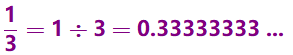
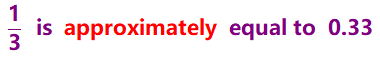
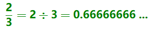

"Percent" means "for each 100" or "out of 100." So a percent is just a fraction whose denominator is 100. If you understand hundredths, you also understand percents!
10% means "ten out of 100" or \(\dfrac{10}{100}\text{,}\) and \(\dfrac{10}{100}\) reduces to \(\dfrac{1}{10}\text{.}\) To find \(\dfrac{1}{10}\) of 12,500, we divide by 10:
Because 10% is equal to \(\dfrac{1}{10},~\) it is easy to find 10% of a number: we just divide the number by 10. Once we know 10% of a number, we can find other percents. For example, to find 20% of a number we can compute 10% of the number and then double the result.
Because "percent" means "per 100," we can change a percent to a decimal fraction by dividing it by 100. You can use your calculator, or, even better, you can remember that to divide by 100 we move the decimal point 2 places to the left.
In Checkpoint 2.2.4 above, do you see the difference between the decimal forms of 50% and 5%? Try one yourself. Write the decimal form of each percent:
We’d like to know what percent is 140 out of 3500. Remember that a percent is a fraction, so we make a fraction with the part (140) out of the whole (3500).
As a decimal fraction, Cheerios provides 0.04, or 4 hundredths of the MDR for potassium. Four hundredths is the same as 4%. (Or you can multiply 0.04 by 100 to write it as a percent: \(0.04 \times 100 = 4%\))
The Gonzalez family’s monthly income is $5200. They budget their money according to the circle graph below. Complete the table showing the amount they spend in each category.
At Marilyn’s office, they held a "Losing It" competition: whoever loses the largest percent of their body weight in six months wins a gift certificate. Who won?
We have studied the benchmark fractions \(\dfrac{1}{4},~~\dfrac{1}{2},~~\) and \(~\dfrac{3}{4},~~\) as well as tenths and hundredths. Along the way we also encountered fifths. Here is another familiar and useful fraction.
Nelson bought a quarter-pound of sliced roast beef and ate half of it for lunch. How many ounces of roast beef did he eat? What fraction of a pound is that?
Half of 4 ounces is 2 ounces, so Nelson ate 2 ounces of roast beef. As a fraction of a pound, 2 ounces is
\begin{equation*}
\dfrac{\text{part}}{\text{whole}} = \dfrac{2}{16} = \dfrac{1}{8}~~~~~~\blert{\text{Reduce: divide top and bottom by 2.}}
\end{equation*}
Two ounces is \(\dfrac{1}{8}\) lb, or one-eighth of a pound.
Recall that \(\dfrac{1}{4}\) is one-half of \(\dfrac{1}{2}\text{.}\) Now we see that \(\dfrac{1}{8}\) is one-half of \(\dfrac{1}{4}\text{.}\) You know that the decimal form of \(\dfrac{1}{4}\) is 0.25 (or 0.250). What is the decimal form of \(\dfrac{1}{8}\text{?}\)
Devon and Darla Grant together make $3200 per month in take-home pay. They are looking for an apartment, and don’t want to spend more than 37.5% of their income on housing. What is the maximum rent they can afford?
We’ll solve this problem in two different ways. First, we’ll compute 37.5% of $3200. We write the percent as a decimal fraction and use a calculator to multiply:
We can compute the fraction without a calculator if we remember that 37.5% is the same as \(\dfrac{3}{8}\text{.}\) We first find \(\dfrac{1}{8}\) of $3200 by dividing by 8:
In photography, the one-third rule suggests that an image should be divided into thirds, both horizontally and vertically, and important elements of the picture, including the horizon, should be placed on the division lines or their intersections.
Zack plans to enlarge the farming scene below into a 24-inch by 15-inch photograph. According to the one-third rule, how far will the base of the tree be from the right-side edge of the picture?
When a home-buyer applies for a mortgage, the monthly payments on the mortgage amount should not exceed one third of the buyer’s net monthly salary. Brandon’s net annual salary is $48,600. What size mortgage payment can he afford?
A manager should allow herself up to one third of the available time for a task to organize the task and delegate responsibility, thus allowing her team the remaining two thirds of the time. Emily has two hours to write her weekly report. How long should her team work on the report?
In scuba diving, one third of the gas supply is used for the outward journey, one third for the return journey, and one third is left as a safety reserve. Farah’s cylinder holds 10 liters. How many liters are left when she starts her return journey?
When mowing grass, you should never remove more than one third of the grass blade. If the mowing height on your lawn mower is 3 inches, how tall should the grass be when you mow, so that you remove one third of the grass blade?
What about the decimal form of \(\dfrac{1}{3}\text{?}\) Remember that some fractions do not "come out evenly" in their decimal form. One-third is one of those fractions. Use your calculator to verify that

where the … symbol indicates that the 3’s go on forever. (Recall that we encountered repeating decimals in Subsection 2.1.4. We can represent \(\dfrac{1}{3}\) with a repeater bar as \(0.\overline{3}.~\)) This is the exact value of \(\dfrac{1}{3}\) as a decimal fraction. We often round the decimal form to hundredths and say that

Similarly, you can verify that the exact value of \(\dfrac{2}{3}\) is

or \(0.\overline{6},~~\) and by rounding to hundredths we see that
Try to do all of your work without a calculator. Remember that once you know the benchmark fractions of an amount, you can use those to find other fractions of the same amount.
The Wellness Clinic gave flu shots to 170 seniors last week. That was 10% of the seniors living in Stratton County. Find 99% of the senior population, using the method you described in parts (a) and (b).
Francine says that we can omit the zero after the 8 in the fraction 0.80, but we cannot omit the zero before the 8 in 0.08. Is she correct? Why or why not?
Write exact decimal and percent forms for \(\dfrac{1}{6}\) and \(\dfrac{1}{12}\) as follows. (Hint: Do you remember the decimal forms for \(\dfrac{1}{3}\) and \(\dfrac{2}{3}\text{?}\))
Cadbury recently reduced the weight of its most popular chocolate bar from 250 grams to 200 grams. What percent of its original weight was that reduction?
Allison is planning a birthday party for her daughter. She has a budget of $68 to spend according to the circle graph shown at left below. How much can she spend in each category?
In New York, a three-fifths majority is required to pass most tax increases. The Assembly has 150 members. How many Assembly members must vote in favor to pass a tax increase?
The U.S. Constitution gives the Senate sole authority to ratify treaties of the United States but makes this contingent upon a two thirds majority. There are 100 U.S. Senators. How many must vote in favor in order to ratify a treaty?
For Problems 61-64, remember that rotating through one whole circle sweeps out an angle of 360°. A sector of a circle is a wedge with its point at the center of the circle.
Until recently, a wife was typically entitled to one-third of the common family income when a couple divorced. The amount of the wife’s alimony was calculated as one-third of the sum of both partners’ incomes, minus her own income. If the husband earned $50,000 and the wife earned $10,000, what was the wife’s alimony?
Demographers argue that when a subgroup becomes one-third of a population, it becomes a political force. In 2012 the U.S. population was 314 million, and the populations of some of the U.S. minority groups are given in the table.
To prevent injury, fitness experts recommend that athletes increase their training activity no more than 10 percent per week. Use this 10 Percent Rule to complete the workout schedule.
In 1942 the ecologist Raymond Lindemann put forth the ten percent law for the transfer of energy in the food chain. His law suggests that 90% of the energy is discarded or lost in the transfer at each level of the food chain, and only 10% is passed on as useable biological energy.


![Runestone Academy logo]()
![MathJax logo]()